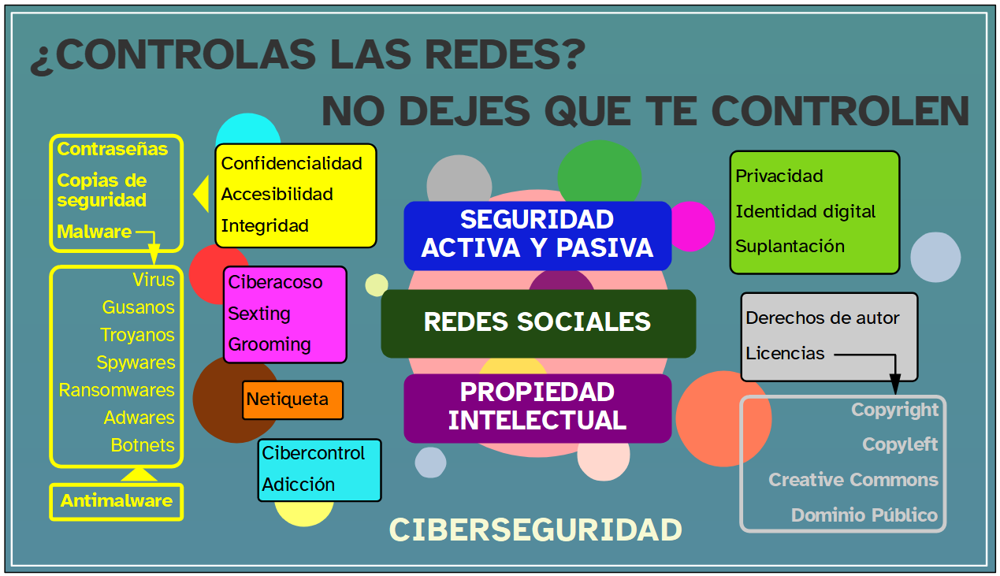

Ya estás concluyendo esta aventura.
Has sabido superar el reto de crear una guía de cirberseguridad y propiedad intelectual para aconsejar al alumnado de 1º de ESO y ahora solo te resta pensar un poco en todo lo que has aprendido mientras has ido trabajando.
Aquí te dejo un breve resumen de lo que has ido viendo a lo largo de todo el proceso. Seguro que ya lo dominas todo porque lo has podido poner en práctica a medida que te ha ido haciendo falta.
Además esto supone también un punto de partida para seguir profundizando en el tema. Piensa que todos los días sale a la luz nuevo malware más sofisticado y dañino y que el cibercrimen va en aumento en paralelo al crecimiento del uso de Internet, en general, y de las redes sociales, en particular. Además la creación de contenido también sigue un ritmo imparable que hay que fomentar y proteger para que el conocimiento humano y la cultura sigan avanzando y lleguen a todo el mundo.
Se ha abierto un nuevo universo de posibiliades y tú estás ya capacitado para aprovecharlas todas.
